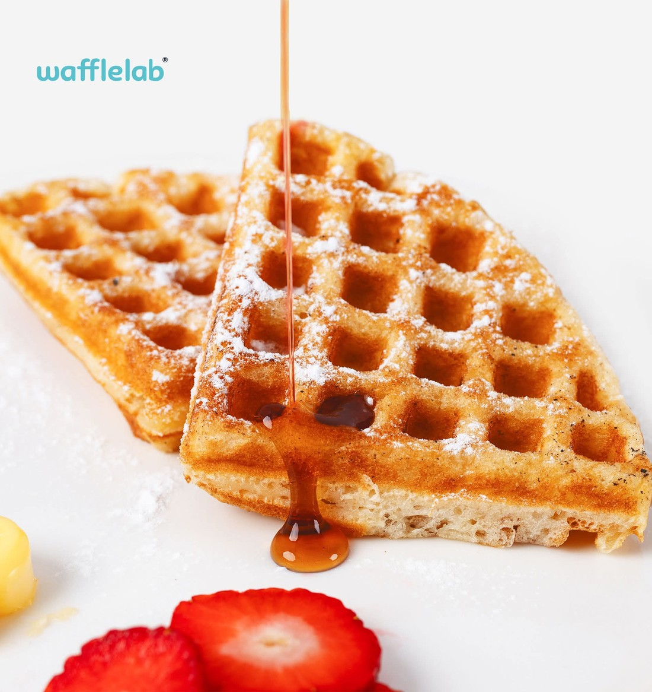
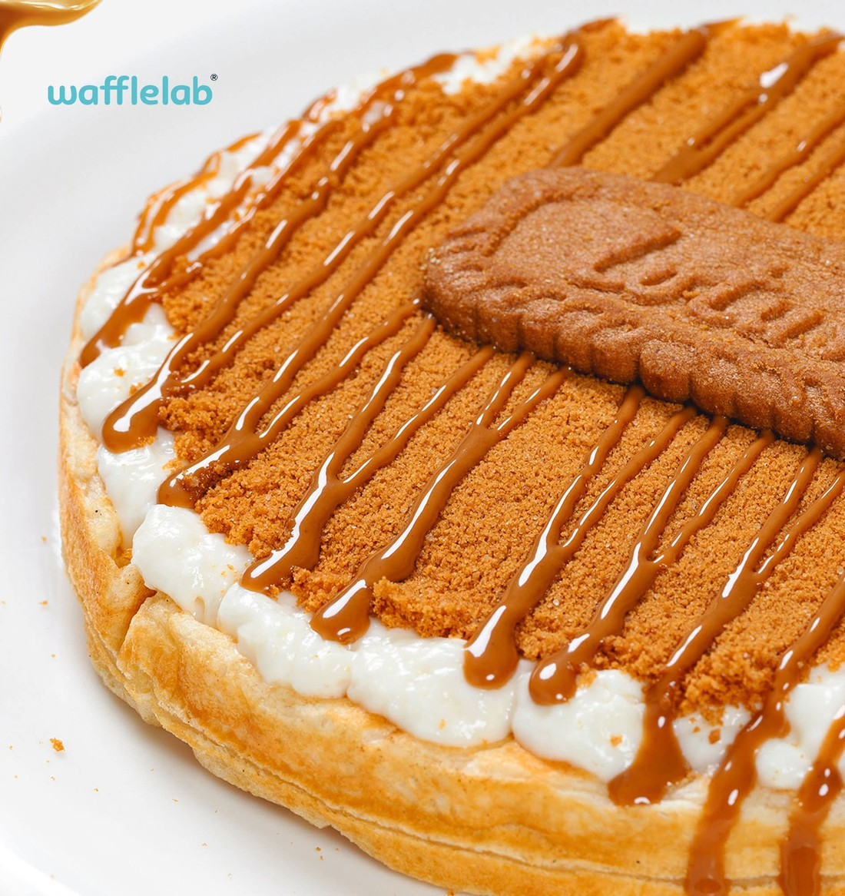
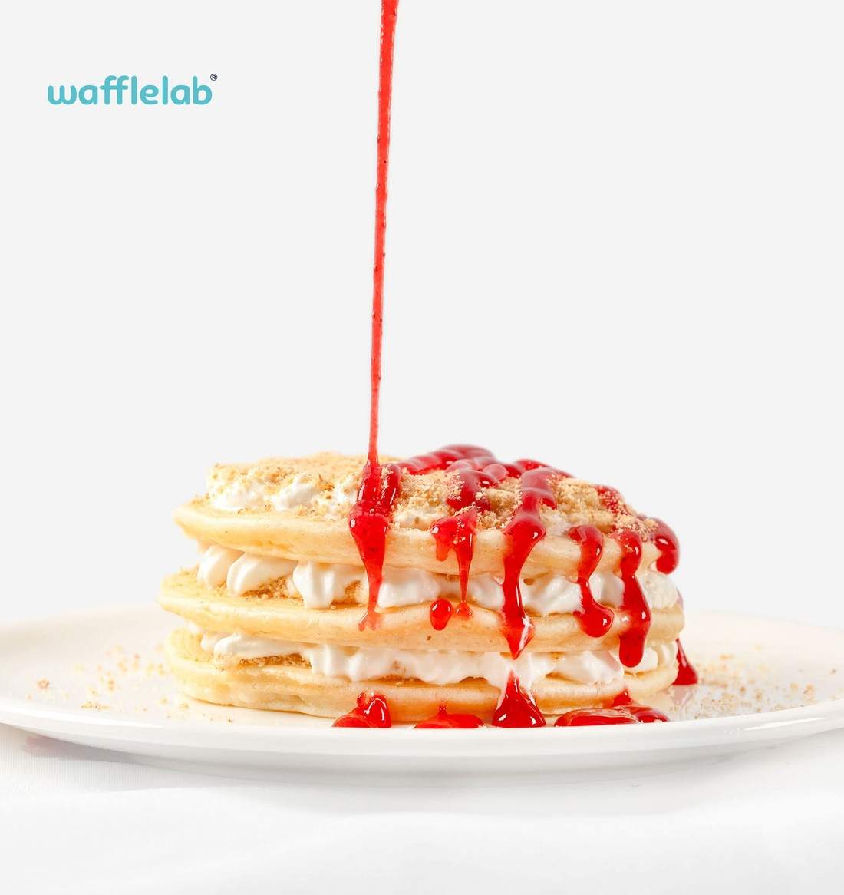
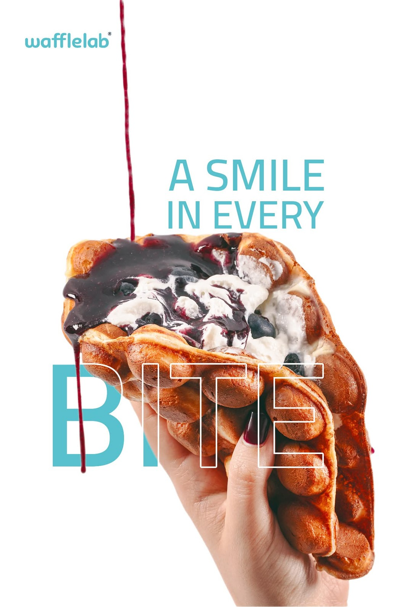
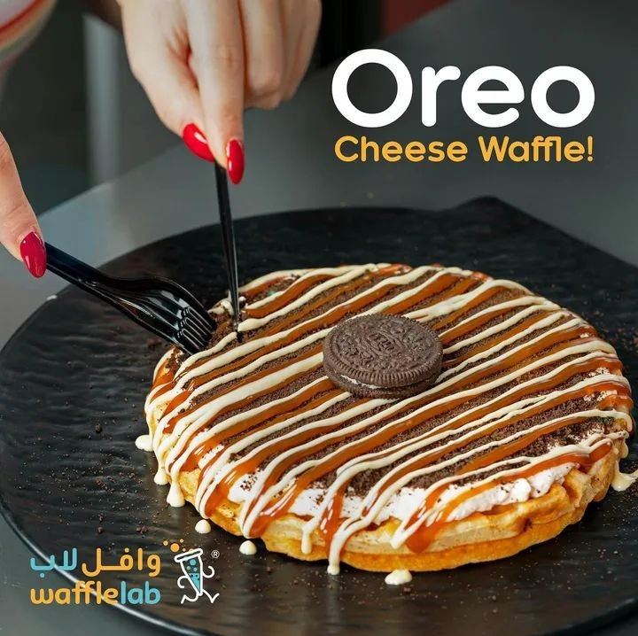
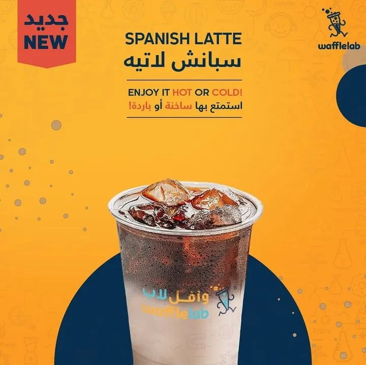
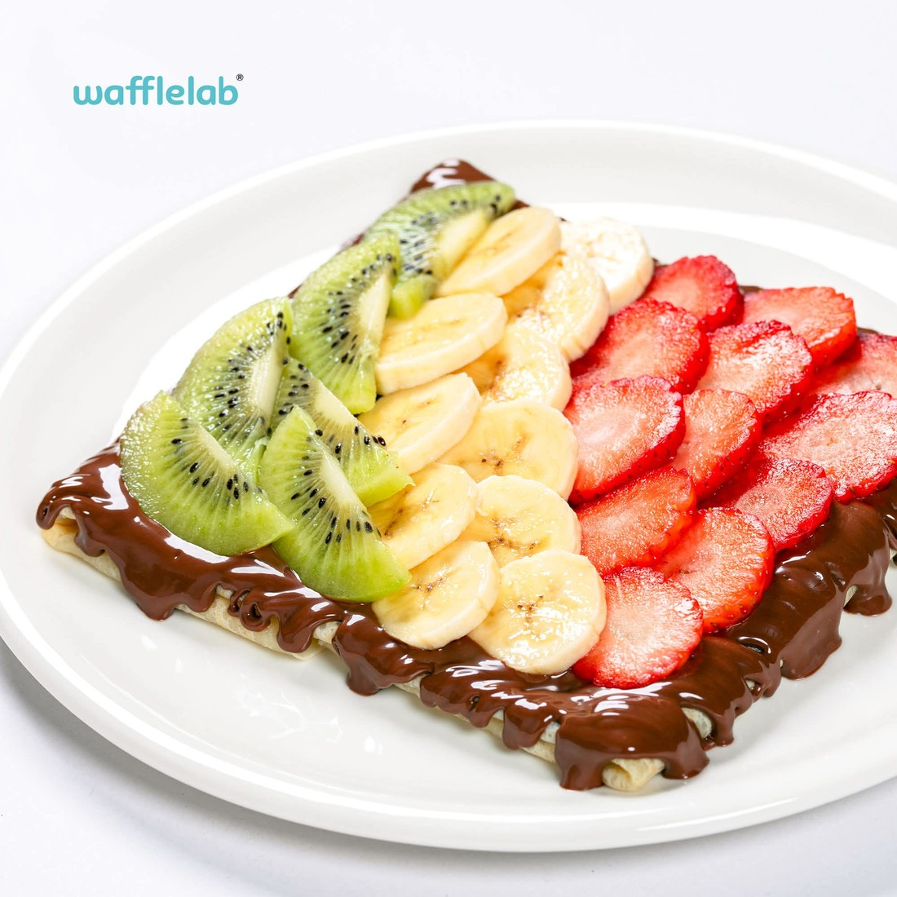
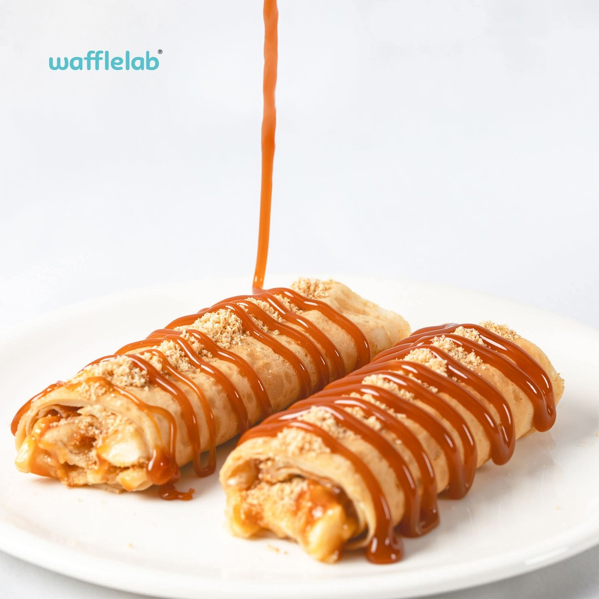
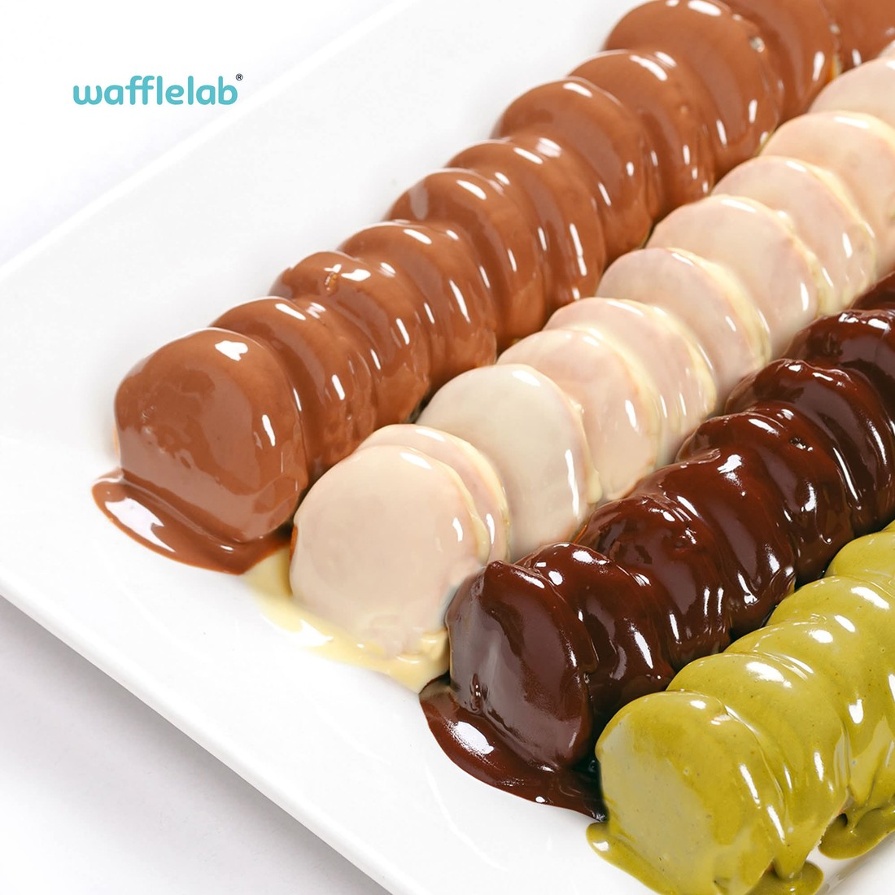

Barista and coffee shop manager with over 8 years in food and beverage. I built a coffee shop from scratch,
founded and ran two food brands from one cloud kitchen, and most recently worked the line in a busy Irish pub
and fine dining kitchen. I bring the craft of the bar together with the discipline of an owner.
8+Years in food & beverage
2Food brands founded
1Coffee shop built from scratch
L2HACCP Levels 1 & 2 certified
Core Competencies
What I bring to the bar
01
Coffee & Beverages
Hot and cold drinks to a consistent, high standard
02
Café Management
Opened and ran a coffee shop: menu, staff, administration
03
Menu Development
Original recipes and signature sauces; customer-led new items
04
Team Leadership
Recruiting, training and guiding staff to one service standard
05
Operations
Procurement, mise en place, portion control, quality control
06
Food Safety
HACCP: storage, temperature control, allergen handling
07
Marketing
Campaigns that lifted sales and brought in new customers
08
Customer Service
Warm, fast service that builds loyal repeat guests



Mazin Thaher
Experience
Career at a glance
Chef
Barista
Manager
Founder & Owner
Line Cook
2017
2018
2020
2022
2025
2026
Experience
Eight years behind the counter
Jul 2025 – Jul 2026Ireland
Line Cook / Kitchen Chef
Busy Pub & Fine Dining Kitchen
Worked grill, fryer and pasta stations, adapting quickly between sections as service demanded.
Cooked fish and chips, burgers and steaks to order and to temperature, managing multiple orders at peak.
Ran mise en place each shift with portion control and consistent plating; followed HACCP and allergen protocols.
2022 – 2025Cloud Kitchen
Founder & Owner
Waffle House & SWAT Burgers
Founded and managed two brands at once: waffles, crepes, coffee and breakfast; and grilled, smashed and crispy chicken burgers.
Developed signature recipes and sauces that set each brand apart.
Handled procurement, food preparation and quality control; recruited, trained and guided the team.
2020 – 2022Est. 2020
Coffee Shop Manager
Wafflelab
Established the coffee shop from scratch: menu design, staff recruitment and training.
Oversaw all operational and administrative aspects; introduced marketing that significantly boosted sales.
Kept product quality and service standards consistent to maintain customer satisfaction.
2018 – 2020
Barista & Chef
Coffee Shop
Prepared a wide range of hot and cold beverages with meticulous attention to quality.
Built loyal customer relationships and contributed new recipes based on guest feedback.
2017 – 2018
Waffle & Crepe Chef
Waffle & Crepe Kitchen
Prepared waffles and crepes with innovative methods, holding quality and speed in a fast-paced kitchen.
Mazin Thaher
Portfolio · I
Café · Established 2020
Wafflelab
Established and managed from scratch: concept, menu design, hiring, training, daily operations and marketing.
A selection of the waffle, crepe and coffee menu.
Role
Coffee Shop Manager
Years
2020 – 2022
Menu
Waffles · Crepes · Coffee


Oreo cheese waffle

Spanish latte

Fruit waffle

Crepes

Waffle sticks
Mazin Thaher
Portfolio · II
Cloud Kitchen Brand · 2022 – 2025
SWAT Burgers
Founded and run alongside Waffle House: grilled, smashed and crispy chicken burgers and sandwiches with
unique breading and signature sauces.